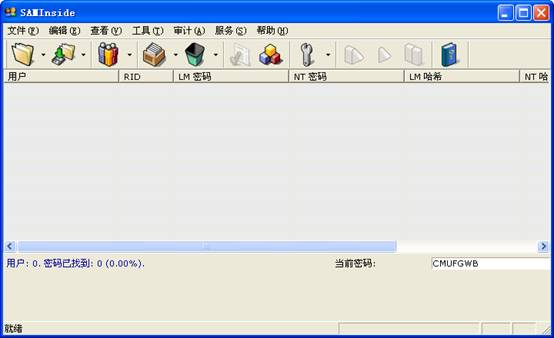
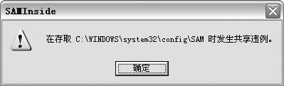
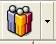
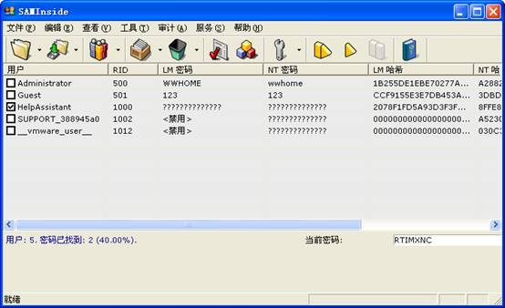

1、 掌握用SAMInside工具破解本地系统帐号口令的基本原理和用法
2、 掌握如何有效防范类似攻击的方法和措施
1、 认真阅读和掌握本实验相关的知识点。
2、 上机实现软件的基本操作。
3、 得到实验结果，并加以分析生成实验报告。
注：因为实验所选取的软件版本不同，学生要有举一反三的能力，通过对该软件的使用能掌握运行其他版本或类似软件的方法。
1、运行SAMInside

图1 SAMInside工具界面
2、破解SYSKEY加密过的密码文件
在Windows 2000及后续系统中，本地的用户名和密码一般是保存在SAM密码文件中的，该文件位于Windows目录下的“system32\config”或“repair”文件夹中。用LC5之类的工具，可以直接从SAM文件中还原破解出登录密码来。但是如果用户运行位于“system 32”文件夹下的“syskey.exe”程序时，将会出现一个帐户数据库加密提示界面（如图2），
图2
点击“更新”后选择密码启动，并输入启动密码。在对话框中经过设置后，将使Windows在启动时需要多输入一次密码，起到了2次加密的作用。其实Syskey工具就是对SAM文件进行了再次加密，从而使得一般的破解工具无法破解口令。
3、导入SAM密码文件
首先运行SYSKEY加密本地的SAM密码文件，然后运行Saminside程序（如图3）。
图3
点击工具栏上第一个图标旁的下拉菜单按钮，在弹出菜单中可以看到各种密码破解方式选项命令（如图4）。
图4
其中的”Import from SAM and SYSKEY files”菜单命令是就是我们今天的重点了，使用该功能就可以破解SYSKEY加密过的密码。
小提示：在破解方式下拉选择菜单中的“Import from SAM and SYSTEM files”命令，是常见的密码破解方式，用于破解经过Syskey加密的SAM文件；运行该命令后选择相应的SAM文件及SYSTEM文件后，即可像LC5一样快速还原破解出登录密码。如果是破解远程入侵主机的密码时，切记需要将主机上与SAM文件同一文件夹下的“SYSTEM”文件下载到本地进行破解。另外的几个菜单选项命令是用来破解其它格式的密码文档的，比如.LCP、.LCS、.LC格式密码文件或PWDUMP文件等。
点击“Import from SAM and SYSKEY files”命令，在弹出对话框中浏览选择SAM文件，确定后会弹出提示框（如图5）
图5
提醒用户SAM文件已经被SYSKEY加密码，要进行破解的话还需要选择SYSKEY-File。
4、.导入SYSKEY加密文件
对话框中提到的“SYSKEY-File”是经过SYSKEY加密后生成的SYSTEM文件，不过直接指定系统中的SYSTEM文件是不行的，我们还要使用一个与Saminiside一起开发的“getsyskey”小工具配合使用。此工具是一个DOS命令行下使用的程序，格式如下：
GetSyskey <SYSTEM-file> [Output SYSKEY-file]
其中SYSTEM-file表示系统中与SAM文件放在同一目录下经过SYSKEY加密过的“System”文件路径，一般位于“c:\windows\system32\config”下。运行命令“Get Syskey c:samsystem syskey”，在这里笔者首先在DOS下将SAM密码文档复制到了“c:sam”文件夹下。命令执行后，提示“Done”，即可在指定的目录中生成一个16个字节的二进制代码文件“syskey”（如图6），将其导入Saminiside中即可。
图6
小提示：在破解的时候，要求SAM文件和SYSKEY-File未被使用中，也就是说假如我们要破当前登录的Windows系统密码的话，首先应该在DOS下或其它Windows系统中将SAM密码文档复制保存到其它的文件夹中，然后再从Saminside中导入进行破解。否则的话将会出现“共享违例”的错误提示对话框（如图7）。

图7
3）.选择破解方式
将SAM文件和SYSKEY加密文档导入后，在Saminiside程序窗口的中间列表中可以看到系统中的所有用户名和密码的LM值（如图8）。
图8
现在点击工具栏上的“Attack Options”按钮，在弹出菜单中可以看到当前可使用的密码破解方式。首先选择使用“LMHash attack”或“NTHash attack”破解方式，其中LMHash只能破解长度为14位字符的密码，而NTHash可以破解长度为32位字符的密码。由于这里是在本机测试，所以知道密码长度为7，因此选择了“LMHash attack”破解方式。
然后要选择破解手段，与其它的破解软件一样Saminiside程序提供了多种密码破解手段，如暴力破解（Brute-force attack）、字典破解（Dictionary attack）、掩码破解（Mask attack）等。点击弹出菜单中的“Options”命令，即可对各种破解手段进行详细设置（如图9）。
图9
以设置暴力破解方式为例，在“Options”对话框中选择“Brute-force attack”标签，“Characters set”设置项中可以选择暴力破解时进行对比的字符串类型。其中“All printable”表示所有可打印的字符；“Latin capital symbols [A .. Z ]”表示大写字母；“Latin small
symbols [a .. z]”表示所有小写字母；“ Special symbols [!@#...]”表示特殊字符串；“Digits”表示所有数字；如果密码中包含空格的话，那么还要选择“Space”项。在这里选择设置了破解密码为数字与小写字母的组合，程序就会自动对数字与字母进行排列与组合，寻找正确的密码。
在设置对话框中“Forming of passwords”用于设置密码长度，指定了密码最小和最大长度后，可以有效的节省密码破解的时间。
在这里需要特别提一下的是掩码破解（Mask attack）设置，如果已经知道密码中的某些字符，选择此种破解方式，可以迅速的得到密码。例如已知在破解的密码首位是某个小写字母，其余几位是数字9564的排列组合，那么可以进行如下设置：
点击“Mask attack”设置标签，在界面中的“X �C Symbol from the custom set”中输入“
图10
其中“a”表示该位密码为小写字母，“N”表示该位密码为数字，“X”表示从预设置的字符串中寻找正解密码；另外“A”和“S”分别表示从所有大写字母和符殊字符中破解正确的密码。点击OK后完成设置，然后在命令菜单中勾选“Mask attack”破解方式即可。
4、开始破解
设置完密码破解方式后，点击工具栏上的“Set password recovery”按钮，即可开始破解用户登录密码了。很快就可以看到破解结果了（如图11）。
图11
在“LM Password”和“NT Password”栏中会显示破解出的密码，有时可能两者中的内容不一样，例如图中显示用户“puma_xy”的密码分别为“123PUMA”和“123puma”，此时以“NT Password”中显示的内容为准。最后可以点击工具栏上的“Check”按钮，对破解出来的密码进行校验，检查无误的话，即可以使用该密码登录了。
1． 使用计划任务从本地电脑导入
选择--》使用计划任务从本地电脑导入，可以直接导入本地计算机账户，如图12

图12 Administrator的密码是WWHOME
要防止密码被破解，必须遵循如下规则：
（1）口令长度不小于8个字符；
（2）包含有大写和小写的英文字母、数字和特殊符号的组合；
（3）不包含姓名、用户名、单词、日期以及这几项的组合；
（4）定期修改口令，并且对新口令做较大的改动。